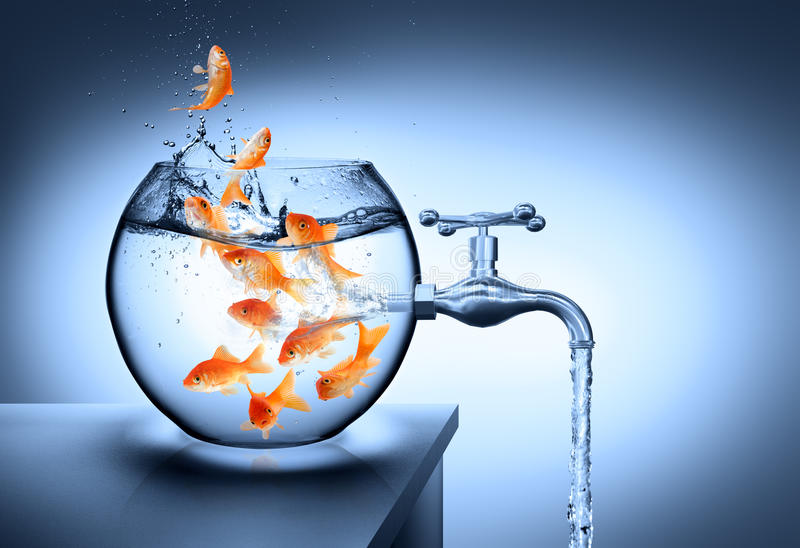

Causes & Effects
Water wastage can have significant impacts both locally and globally, making it a pressing concern for individuals, communities, and governments. One of the most significant causes of water wastage is overuse, with people often using more water than necessary for daily activities like bathing, washing clothes, or watering plants. Faulty pipes, taps, and valves can also cause water leakages, which can result in significant water wastage. Poor infrastructure, including a lack of proper water storage facilities, treatment plants, and distribution networks, can also lead to water wastage. Inefficient irrigation practices in agriculture can also contribute to water wastage. The effects of water wastage can include water scarcity, which exacerbates the problem by reducing the available water supply. Water wastage can also have various environmental impacts, such as reduced river flows, damage to aquatic ecosystems, and decreased groundwater recharge. In addition, water wastage can lead to economic losses, such as increased water bills, higher costs for repairing infrastructure, and decreased agricultural productivity. Finally, water scarcity caused by wastage can lead to hygiene problems, which can cause waterborne diseases. It is crucial to address the causes of water wastage to mitigate these effects and ensure sustainable water management practices.

Solutions
- Fix leaks: Leaks are a major cause of water wastage. Fixing leaks in pipes, faucets, and toilets can help save a significant amount of water.
- Use efficient appliances: Choosing water-efficient appliances like dishwashers, washing machines, and showerheads can reduce water usage.
- Adopt water-saving habits: Simple habits like turning off the tap while brushing your teeth, taking shorter showers, and watering plants during cooler hours of the day can save a lot of water.
- Harvest rainwater: Collecting and storing rainwater for household use is an effective way to reduce dependence on freshwater sources.
- Use recycled water: Recycled water, also known as greywater, can be used for activities like watering plants, flushing toilets, and cleaning, reducing the need for freshwater.
Jal Jeevan Mission
Launched in 2019
Jal Jeevan Mission aims to provide piped drinking water to every rural household in India by 2024. The program focuses on water conservation and the rejuvenation of water sources, with an emphasis on community participation.
Atal Bhujal Yojana
Launched in 2020
Atal Bhujal Yojana aims to improve groundwater management in the country. The program focuses on the sustainable use of groundwater resources, with an emphasis on community-based management.
National Water Policy
Backed By Government
The National Water Policy is a comprehensive framework that guides the management of water resources in the country. The policy promotes water conservation, the efficient use of water, and the integration of water management with other sectors like agriculture and industry.